面談の質が担当者によって
ばらつく
評価面談・1on1・キャリア面談など、面談の進め方や深掘りの仕方が担当者に依存し、質にムラが出やすい
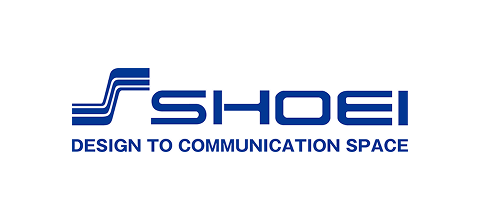
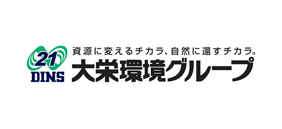
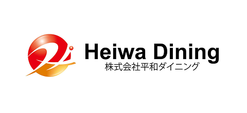
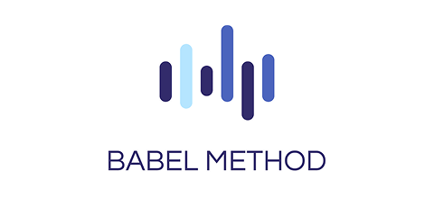
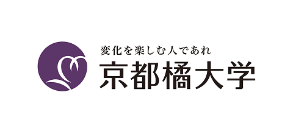
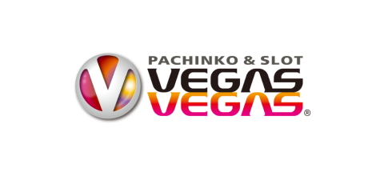
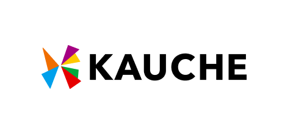
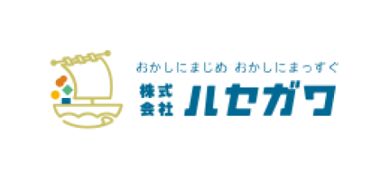
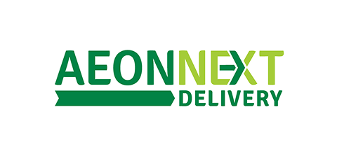
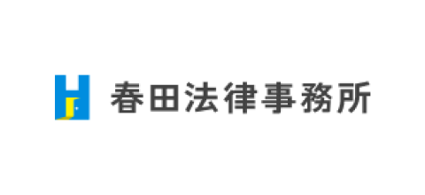
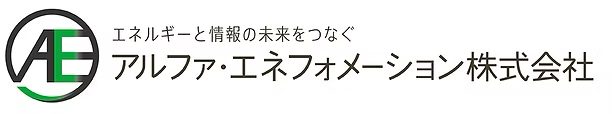
評価面談・1on1・キャリア面談など、面談の進め方や深掘りの仕方が担当者に依存し、質にムラが出やすい
上司や人事が相手だと率直な意見を言いづらく、当たり障りのない会話で終わってしまうことが多い
面談前の準備、実施中のメモ、終了後のレポート作成や関係者への共有など、付帯業務が大きな負担になっている
MiAI面談で社内面談の悩みをまとめて解決しませんか？
AIが評価軸に沿ったヒアリングを実施するため、評価者のスキルに依存せず、一貫した品質の面談を実現できます
上司や人事ではなくAIが聞き手になることで、被評価者が率直な意見や不満を安心して話せる環境をつくります
ヒアリング結果をAIが自動で要約・構造化し、評価シートへの反映や推移分析もすぐに資料として見える化できます
全社面談の調整や実施にかかっていた膨大な工数が一気に削減できました。面談の質が平準化され、属人化も解消。退職リスクや本音の可視化により、本当にケアが必要な社員へ迅速にアプローチできています。
面談の準備や記録に追われていた時間を取り戻す。AIが事前ヒアリングとレポート作成を担うことで、本質的な対話に集中できます。
面談の準備や記録に追われていた時間を取り戻す。AIが事前ヒアリングとレポート作成を担うことで、本質的な対話に集中できます。
評価面談の前にAIが対象者へ一次ヒアリングを実施。評価軸に対する自己認識や本音・不満を事前に引き出し、限られた面談時間を本質的な対話に充てられます。
ヒアリング内容をAIが自動で要約・構造化し、評価シートに沿ったレポートとして出力。面談後のまとめ作業や人事への共有の手間を削減します。
評価面談・1on1・キャリア面談など、過去の面談データを横断で蓄積・可視化し、個人・組織の成長やコンディションの変化を時系列で把握できます。
訴求内容の説明文が入ります。内容は要検討。
訴求内容の説明文が入ります。内容は要検討。
訴求内容の説明文が入ります。内容は要検討。
フォームより資料請求・デモ体験のお申し込み
担当者よりご連絡し、実際の画面を体験いただきます
評価面談・1on1など、貴社の活用シーンに合わせてご提案します
初期設定のサポートを行い、運用を開始します
お申し込みから最短2週間で導入可能です。初期設定のサポートも担当者が伴走いたします。
回答文が入ります（原稿待ち）。
回答文が入ります（原稿待ち）。
回答文が入ります（原稿待ち）。
回答文が入ります（原稿待ち）。